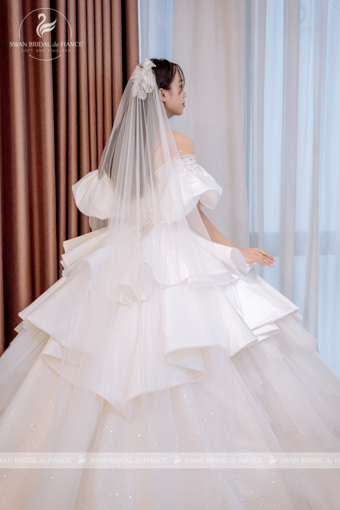
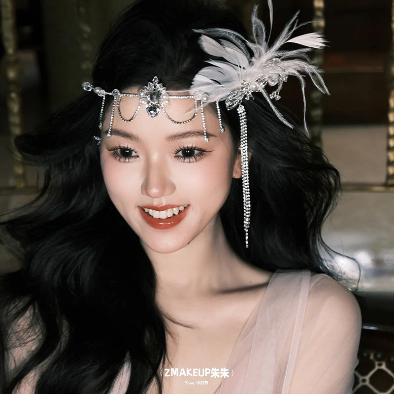
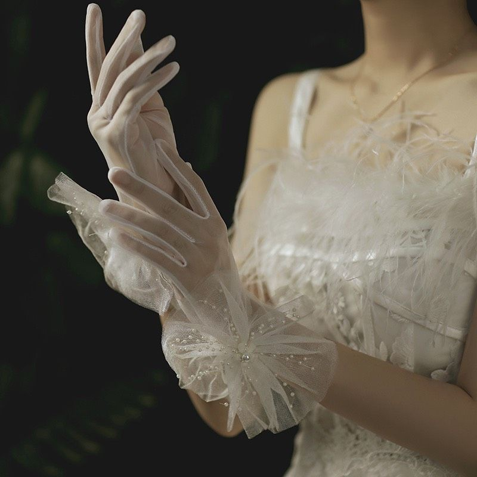
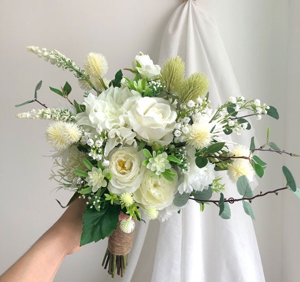

Đăng ngày: 23/11/2025 — Tác giả: Hà Thu
Trong ngày trọng đại, bộ váy cưới đẹp thôi vẫn chưa đủ; chính những phụ kiện tinh tế mới là yếu tố hoàn thiện trọn vẹn vẻ đẹp của cô dâu. Xu hướng năm 2025 mang đến nhiều lựa chọn hiện đại, thanh lịch và tiện dụng, giúp cô dâu thể hiện cá tính một cách tự nhiên.

1. Voan cưới – Biểu tượng mềm mại vượt thời gian
Voan cưới luôn giữ vai trò quan trọng trong trang phục cưới. Năm nay, xu hướng voan dài chạm đất hoặc voan ren thêu tay trở lại mạnh mẽ. Những đường thêu thanh mảnh tạo nên vẻ mềm mại, nhẹ nhàng nhưng vẫn trang trọng và cuốn hút.
“Không có phụ kiện nào làm tăng vẻ nữ tính của cô dâu bằng một chiếc voan được chọn đúng.”
2. Vương miện & băng đô – Nét kiêu sa của cô dâu hiện đại
Vương miện không còn giới hạn trong phong cách cổ điển. Cô dâu hiện đại chuộng các thiết kế tối giản, dát ngọc trai hoặc pha lê nhỏ tạo cảm giác sang nhưng không “quá tay”.
Nếu muốn nhẹ nhàng hơn, băng đô bản nhỏ hoặc kẹp tóc đá trong suốt cũng là lựa chọn hoàn hảo cho phong cách thanh lịch, tinh tế.
3. Trang sức cưới – Hoàn thiện thần thái của cô dâu
Bộ trang sức phù hợp giúp gương mặt sáng và hài hòa hơn. Xu hướng 2025 ưu tiên chất liệu ngọc trai tự nhiên, kim loại nhỏ hoặc đá trong suốt. Phong cách tối giản tiếp tục được ưa chuộng, đặc biệt phù hợp với các dáng váy trễ vai, cổ chữ V hoặc cổ yếm.
4. Găng tay cưới – Sự trở lại đầy sang trọng
Găng tay cưới – từng là biểu tượng hoàng gia – đang quay lại mạnh mẽ với thiết kế ren mỏng, satin hoặc lưới trong. Đây là phụ kiện lý tưởng cho cô dâu muốn thêm điểm nhấn nổi bật nhưng vẫn tinh tế.
5. Giày cưới – Vừa đẹp vừa thoải mái
Dù không xuất hiện nhiều trong khung hình, giày cưới vẫn là yếu tố quan trọng quyết định sự thoải mái cho cô dâu trong suốt ngày dài. Các mẫu giày được yêu thích gồm:
- Giày cao gót 3–5 cm (dễ đi, dáng đẹp).
- Giày bít mũi đính đá hoặc satin.
- Giày sneaker trắng dành cho concept chụp hình năng động.
“Một đôi giày thoải mái là nụ cười đẹp nhất của cô dâu.”
6. Túi cầm tay mini – Phụ kiện nhỏ nhưng hữu ích
Cô dâu hiện đại thường mang theo túi mini để đựng son, khăn giấy hoặc điện thoại. Mẫu túi dạng hộp cứng, ngọc trai hoặc pha lê là lựa chọn nổi bật trong năm nay.
Kết luận
Những phụ kiện cưới không chỉ làm đẹp cho cô dâu mà còn giúp thể hiện phong cách riêng. Quan trọng nhất là bạn nên chọn các món đồ phù hợp với cá tính, dáng người và thiết kế váy cưới. Chỉ cần tinh tế một chút, bạn sẽ trở thành phiên bản lộng lẫy nhất của chính mình trong ngày trọng đại.